조경산업기사 (2013-06-02 기출문제)
1과목: 조경계획 및 설계
1. “7가지의 경관의 유형을 기초로 산림경관을 분석하는데 사용한 방법” 과 관련된 항목은?
- 시각회랑에 의한 방법
- 기호화 방법
- 계량화방법
- 메쉬 분석방법
(정답률: 71%)

2. 도시공원 및 녹지 등에 관한 법률 및 관련 법규에서 도시공원 설명으로 맞는 것은?
- 도시공원 중 소공원, 어린이공원, 근린공원은 주제공원으로 분류된다.
- 어린이공원의 규모는 1,500m2 이상의 면적을 기준으로 한다.
- 근린공원은 도시의 각종 문화적 특징을 활용하여 도시민의휴식ㆍ교육을 목적으로 설치하는 공원을 말한다.
- 묘지공원안의 건축물 건폐율은 100분의 5이하로 하여야 한다.
(정답률: 82%)
3. M. Laurie는 조경과 관련된 학문 영역을 6가지로 분류하였다. 다음 중 이에 해당하지 않는 것은?
- 표현기법
- 설계 방법론
- 공학적 지식
- 컴퓨터 그래픽스
(정답률: 90%)
4. 건축법에 의해 지역의 환경을 쾌적하게 조성하기 위하여 건축물 조성시 일반이 사용할 수 있도록 대지 내에 일정기준에 따라 설치하는 소규모 휴식시설 등의 공간을 무엇이라고 하는가?
- 대지내의 조경
- 공개 공지
- 오픈 스페이스
- 건축물 후퇴선
(정답률: 54%)
5. 인간척도(human scale)가 가장 잘 나타난 그림은?
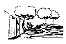
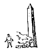
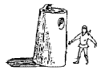
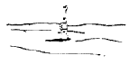
(정답률: 75%)
6. 인문환경 분석대상과 관련없는 것은?
- 현존 토지이용
- 주변관의 관계
- 교통과 도로
- 자연적 특징
(정답률: 65%)
7. 다음 중 세계 7대 불가사의(不可思議)의 하나로 손꼽히는 것은?
- 밀턴읜 실낙원(失樂園)
- 베르사이유의 궁원(宮苑)
- 중국의 만수산정원(萬壽山庭園)
- 바빌로니아의 공중정원(空中庭園)
(정답률: 93%)
8. 중국 역대의 조경가 중 명(明)나라 때의 사람은?
- 미만종, 계성
- 주면, 예운림
- 석도, 이어
- 염입덕, 백거이
(정답률: 68%)
9. 이탈리아 르네상스 시대 바로크(Baroque) 양식에 특징적으로 나타난 조경 시설로 거리가 먼 것은?
- 정원동굴
- 토피아리의 난용(亂用)
- 물 오르간(Water organ)
- 파티오(patio)
(정답률: 79%)
10. 고려시대와 관련된 원림(園林)의 건축물은?
- 임해천, 포석정
- 임류각, 망해정
- 주합루, 부용정
- 만월대, 태평정
(정답률: 68%)
11. 「작정기」에 “못도 없고 유수도 없는 곳에 돌을 세우는 것” 이라 칭한 정원 수법으로 가장 적합한 것은?
- 고산수식
- 회유임천식
- 다정
- 침전조
(정답률: 92%)
12. 통일신라시대의 정원인 임해전지에 대한 기록이 남아있는 서적은?
- 서경잡기(西京雜記)
- 동사강목(東史綱目)
- 설문해자(說文解字)
- 해동잡록(海東雜錄)
(정답률: 76%)
13. 삼국사기 백제본기에 의하면 무왕 35년에 궁 남쪽에 정원을 꾸몄다 하였는데 다음 설명 중 옳은 것은?
- 서안에 소나무를 무성하게 심었다.
- 솟는 물을 모아 연못을 만들었다.
- 못에 섬을 만들었다.
- 석가산을 쌓아 방장선산을 상징하였다.
(정답률: 74%)
14. “동양 정원론(Dissertation on Oriential Gardening)”을 간행한 조경가는?
- 브라운
- 햄프리 레프턴
- 윌리엄 챔버
- 애드슨과 포우
(정답률: 73%)
15. 바닥 포장이 가져야 할 기능적이고 구성적인 요소로서 가장 관계가 먼 것은?
- 방향의 지시
- 통행속도와 리듬의 지시
- 지면의 용도지시
- 가로막기의 지시
(정답률: 72%)
16. 그림과 같은 정면도와 평면도에 가장 적합한 우측면도는?
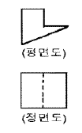
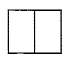
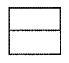
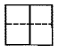
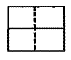
(정답률: 77%)
17. 다음 도면에서 A가 가르키는 선의 종류로 옳은 것은?
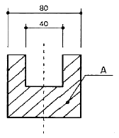
- 중심선
- 해칭선
- 절단선
- 가상선
(정답률: 89%)
18. 강물이나 계곡 또는 길게 뻗는 도로와 같이 거리가 멀어짐에 따라 점차적으로 그 스스로가 하나의 점으로 변하여 시선을 집중시키는 효과를 갖는 경관은?
- 초점 경관
- 천연 미적 경관
- 포위된 경관
- 세부적 경관
(정답률: 94%)
19. 다음 조건 중 진출효과가 가장 큰 것은?
- 파랑바탕에 흰색
- 빨강바탕에 주황색
- 검정바탕에 노랑색
- 흰색바탕에 검정색
(정답률: 88%)
20. 다음 색상 중 가장 깨끗한 색가(色價)를 지닌 고채도의 색은?
- 한색
- 탁색
- 난색
- 순색
(정답률: 81%)
2과목: 조경식재
21. 다음 중 이식을 하면 반드시 수간에 흙바르기 양생을 해야 할 수종은?
- 목련류
- 소나무류
- 은행나무
- 단풍나무
(정답률: 75%)
22. 다음 녹화식물의 종류에서 감기형 식물에 해당하지 않는 것은?
- 인동
- 으아리
- 줄사철나무
- 노박덩굴
(정답률: 68%)
23. 수목들이 숲에서 경쟁할 때 가장 중요한 요소는 빛으로 양수는 높은 광도에서 광합성을 효율적으로 한다. 다음 중 가장 높은 광도에서 광합성을 하는 식물은?
- 개비자나무
- 방크스소나무
- 편백
- 칠엽수
(정답률: 53%)
24. 학명의 종명 중 잎의 모양(leaf form)을 표현한 것은?
- stellata
- parviflora
- glabra
- umbellata
(정답률: 69%)
25. 차폐용 수목의 조건으로 적합하지 않은 것은?
- 상록으로 지엽이 치밀해야 한다.
- 맹아력, 전정력이 강한 수목이라야 한다.
- 수관이 크고 일정한 지하고가 유지되어야 한다.
- 아랫가지가 잘 마르지 않는 수목이라 한다.
(정답률: 68%)
26. 다음 중 실내 식물의 형태와 이에 해당하는 식물의 예로 연결이 틀린 것은?
- 줄기강조형 - Phoenix robelini, Bamboo Palm
- 덩굴형 - Philodendron류, Ficus pumila
- 분수형 - Dieffenbachia, Scindapsus류
- 부채형 - Aglaonema류, Spathiphyllum류
(정답률: 60%)
27. 공장을 중심으로 한 주변의 녹지대 조송에 대한 설명 중 적당하지 않은 것은?
- 녹지대의 조성 목적은 매연, 유독가스, 분진 등이 인근 주거 지역에 파급, 낙하하는 것을 막고, 여과효과를 기대하는데 있다.
- 배식계획에 있어서는 공장 측으로부터 키가 큰 나무, 중간나무, 키가 작은 나무 순으로 배식한다.
- 배식수종은 상록 활엽수를 양 측에, 침엽수를 중앙부에 배식하고 나뭇잎이 서로 접촉할 정도로 심는다.
- 공장 주변의 주거지역에는 광역적인 녹지대를 조성하고, 교목성 상록수를 심는 것이 바람직하다.
(정답률: 67%)
28. 다음 중 수생식물이 아닌 것은?
- 색비름
- 검정말
- 수련
- 마름
(정답률: 68%)
29. 다음 중 식수(植樹)에 의한 소음감쇠치에 영향을 미치는 조건으로 가장 거리가 먼 것은?
- 식재수종과 수고
- 수목의 질감과 광주기성
- 수목의 지하고와 지엽밀도
- 단위 면적당의 임목밀도와 수목 배열방법
(정답률: 76%)
30. 다음 중 원추형의 아름다운 수형을 갖고, 차폐식재나 생울타리용으로 많이 사용되는 수종으로 Thuja occidentalis와 같은 과(科)의 식물은?
- 메타세쿼이아
- 주목
- 노간주나무
- 독일가문비
(정답률: 44%)
31. 다음 중 난지형(暖地型)의 잔디는?
- kentucky bluegrass
- bermudagrass
- bentgrass
- red fescue
(정답률: 73%)
32. 뿌리혹박테리아의 도움을 얻어 공중질소(空中窒素)를 이용하는 비료목(肥料木)인 것은?
- Fatsia japonica Decne. & Planch
- Pinus thumbergii Parl.
- Elaeagnus umbellata Thunb.
- Abeliophyllum distichum Nakai
(정답률: 43%)
33. 학명이 이명법(binomials)이라고 불리우는 이유는?
- 속명+명명자로 구성되기 때문이다.
- 보통명+종명으로 구성되기 때문이다.
- 속명+종명으로 구성되기 때문이다.
- 종명+명명자로 구성되기 때문이다.
(정답률: 87%)
34. 다음 중 내조성(耐潮性)이 가장 강한 수종은?
- Pinus thunbergii Parl.
- Picea abies(L.) H.Karst.
- Pinus densiflora Siebold & Zucc.
- Acer buergerianum Miq.
(정답률: 45%)
35. 식물과 온도와의 관계에 관한 설명으로 틀린 것은?
- 식물종에 따라 생육가능한 최저, 최고온도의 한계범위를 임계온도라 한다.
- 식물의 생존에 가장 적합한 온도를 최적온도라 한다.
- 온대지역의 목본식물들은 가을 온도저하에 따라 생장이 정지되는데 이러한 저온 적응양상을 항상성이라 한다.
- 고위도지역에서 수목 분포를 제한하는 가장 중요한 요인은 겨울과 여름철의 온도이다.
(정답률: 66%)
36. 주행 중 운전자가 도로 선형의 변화를 미리 알도록 하는 식재는?
- 시선유도 식재
- 진입방지 식재
- 명암순응 식재
- 지표 식재
(정답률: 86%)
37. 조경공사의 식재시방서로 작성한 내용 중 옳지 않은 것은?
- 수목의 운반은 뿌리가 손상되지 않도록 하고, 당일 식재를 원칙으로 한다.
- 식재지의 토질은 단립(團粒)구조로 조정토촉 하며, 토양입자 50%, 수분 25%, 공기 25%의 구성비를 원칙으로 한다.
- 물받이는 수관폭의 1/3 또는 뿌리분의 크기보다 약간 크게하여, 높이 10㎝ 정도 흙으로 만든다.
- 관수는 일출, 일몰시보다는 햇빛이 많이 쪼이는 10~15시 정도에 주는 것을 원칙으로 한다.
(정답률: 80%)
38. 다음 중 층층나무과(科)의 수종으로만 구성된 것은?
- 산딸나무, 산사나무
- 산수류, 흰말채나무
- 노각나무, 곰의말채
- 식나무, 쪽동백나무
(정답률: 70%)
39. 실내조경 식물의 양분요소와 작용기능이 옳게 연결된 것은?
- 질소(N) : 수분흡수와 당의 이동에 관여
- 칼륨(K) : 단백질, 효소, 핵산의 구성
- 유황(S) : 효소의 구성성분이며, 호르몬(IAA)을 합성
- 마그네슘(Mg) : 엽록소의 구성성분이며, 각종 효소의 활성화
(정답률: 70%)
40. 우리나라 남부의 해안지역에 많이 분포하는 상록활엽교목 수종으로 내염성이 강하고, 방풍림과 경관수로 사용되는 나무는?
- Nandina domestica Thunb
- Castanea crenata Siebold & Zucc
- Machilus thunbergii Siebold & Zucc
- Corylus heterophylla Fisch. ex Trautv. var. heterophylla
(정답률: 52%)
3과목: 조경시공
41. 굳지 않은 콘크리트의 성질에 관한 설명으로 옳지 않은 것은?
- 사용되는 단위수량이 많을수록 콘크리트의 컨시스턴시는 커진다.
- 비빔시간이 너무 길면 수화작용을 촉진시켜 워커빌리티가 나빠진다.
- 시멘트는 분말도가 높아질수록 점성이 낮아지므로 컨시스턴시도 커진다.
- 입형이 둥글둥글한 강모래를 사용하는 것이 모가 진부순모래의 경우보다 워커빌리티가 좋다.
(정답률: 60%)
42. 부지의 조성작업순서가 옳게 나열된 것은?
- 굴삭, 운반 → 벌개, 제근 → 성토, 고르기 → 다지기
- 성토, 고르기 → 벌개, 제근 → 굴삭, 운반 → 다지기
- 벌개, 제근 → 성토, 고르기 → 굴삭, 운반 → 다지기
- 벌개, 제근 → 굴삭, 운반 → 성토, 고르기 → 다지기
(정답률: 72%)
43. 건축 부분의 재료 중 일반적인 추정 단위중량이 옳지 못한 것은? (단, 건설공사 표준품셈상의 자연상태이다.)
- 암석(화강암) : 2600~2700 kg/m3
- 자갈(건조) :1600~1800 kg/m3
- 모래(습기) :1700~1800 kg/m3
- 미송 : 1800~2400 kg/m3
(정답률: 72%)
44. 지점과 번력에 대한 설명 중 옳지 않은 것은?
- 구조물의 반력은 수평반력ㆍ수직반력ㆍ모멘트 반력의 3가지가 있다.
- 지점은 부재의 운동상태에 따른 반력의 생성상태에 따라 이동지점, 회전지점, 고정지점으로 나뉜다.
- 회전지점에 발생되는 반력은 수평반력과 수직반력이다.
- 이동지점에는 수직반력과 모멘트 반력이 발생한다.
(정답률: 41%)
45. 어느 흙의 자연함수비가 그 흙의 액성한계보다 높다면 그 흙은 어떤 상태인가?
- 고체상태에 있다.
- 소성상태에 있다.
- 액체상태에 있다.
- 반고체상태에 있다.
(정답률: 62%)
46. 다음 [보기]는 어느 종류의 램프를 설명하고 있는가?
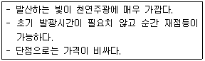
- 메탈할라이드램프
- 할로겐램프
- 나트륨램프
- 크세논램프
(정답률: 46%)
47. 다음 그림과 같은 돌쌓기 방식은?
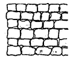
- 다듬돌바른층쌓기
- 막돌층지어쌓기
- 마름돌바른층쌓기
- 허튼층쌓기
(정답률: 61%)
48. 등고선의 성질에 대한 설명으로 옳지 않은 것은?
- 등고선은 교차하거나 합쳐지지 않는다.
- 등고선과 최대 경사선은 수직을 이룬다.
- 경사가 같은 곳에서는 등고선 간의 간격도 같다.
- 등고선은 도면의 안 또는 밖에서 반드시 폐합한다.
(정답률: 73%)
49. 어느 골재의 실적률이 60% 일 때 이 골재의 공극률은 몇 %인가?
- 12.5%
- 20%
- 25%
- 40%
(정답률: 84%)
50. 편경사(cant)에 대한 설명으로 틀린 것은?(오류 신고가 접수된 문제입니다. 반드시 정답과 해설을 확인하시기 바랍니다.)
- 편경사는 완화곡선 설치에 사용된다.
- 편경사는 도로 및 철도의 선형설계에 적용된다.
- 편경사는 차량 속도는 제곱에 비례하고 곡선반지름에 반비례한다.
- 차량의 곡선부 주행시 뒷바퀴가 앞바퀴보다 항상 안쪽으로 지나는 현상을 고려하기 위한 것이다.
(정답률: 47%)
51. 콘크리트 타설시 주의사항으로 옳지 않은 것은?
- 자유낙하높이를 가능한 작게 한다.
- 타설시 콘크리트가 매입철근에 충격을 주지 않도록 주의한다.
- 운반거리가 가까운 곳에서부터 타설을 시작하여 먼 곳으로 진행해 나간다.
- 콘크리트의 재료분리를 방지하기 위하여 횡류(橫流), 즉 옆에서 흘려 넣지 않도록 한다.
(정답률: 88%)
52. 양질 도토 또는 장석분을 원료로 하여 흡수율이 1% 이하로 거의 없으며, 소성온도가 약 1230~1460℃인 점토 제품은?
- 토기
- 자기
- 석기
- 도기
(정답률: 65%)
53. 견치석을 이용하여 찰쌓기로 옹벽을 만들 때 뒤채움 잡석을 배수공으로 위치에 넣는 이유로 가장 적합은 것은?
- 토입에 견딜 수 있도록 완충역할을 한다.
- 옹벽 뒤쪽에 토양내에 있는 자유수를 배수시켜 토압을 감소시킨다.
- 중력식 옹벽에서 옹벽에서 무게를 증대시켜 지지력을 높게 해준다.
- 옹벽 뒤쪽의 흙이 얼어서 옹벽을 미는 힘을 완화시킨다.
(정답률: 63%)
54. 다음 중 배수관거의 시공성을 고려하여 선정시 가장 거리가 먼 것은?
- 수리학상 유리할 것
- 하중에 대하여 경제적일 것
- 축조가 용이한 것
- 미관이 좋은 것
(정답률: 84%)
55. 저급점토, 목탄가루, 톱밥 등을 혼합하여 성형 후 소성한 것으로 단열과 방음성이 우수한 벽돌은?
- 중량벽돌
- 경량벽돌
- 내화벽돌
- 보통벽돌
(정답률: 66%)
56. 다음 그림이 나타내는 벽돌쌓기 방법은?
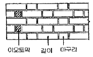
- 영식쌓기
- 불식쌓기
- 미식쌓기
- 화란식쌓기
(정답률: 58%)
57. 평판측량에 대한 설명으로 옳지 않은 것은?
- 대단위 지역의 지형도 측량에 많이 사용한다.
- 현장에서 측량이 잘못된 곳을 발견하기 쉽다.
- 복잡한 지형이나 시가지, 농지 등의 세부 측량에 이용 할 수 있다.
- 현장에서 직접 대상물의 위치를 관측하여 축척에 맞게 평면도를 그리는 측량이다.
(정답률: 45%)
58. 목재의 탄성계수에 관한 설명 중 맞는 것은?
- 강도에 반비례한다.
- 함수율에 비례한다.
- 모든 목재가 동일하다.
- 비중이 증가할수록 탄성계수도 증가한다.
(정답률: 62%)
59. 다음 설명 중 ( )안에 들어갈 용어 또는 기호는?
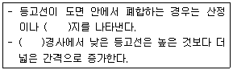
- 등경사
- 凸
- 凹
- 안부
(정답률: 70%)
60. 축척 1/1000의 지형도를 이용하여 축척 1/5000 지형도를 제작하려고 한다. 1/5000 지형도 1장의 제작을 위해서는 1/1000 지형도가 몇 장이 필요한가?
- 5매
- 15매
- 25매
- 30매
(정답률: 72%)
4과목: 조경관리
61. 아스파트 포장의 파손 중 기초노체의 시공불량(성토다짐부족, 혼합물, 전압부족 등), 노상의 지지력 부족 및 불균일 등이 원인이 되어 발생하는 현상은?
- 균열
- 국부적 침하
- 표면연화
- 박리
(정답률: 60%)
62. 열처리나 침수처리 등의 잡초방제방법을 무슨 방제법이라고 하는가?
- 경종적 방제법
- 물리적 방제법
- 생태적 방제법
- 예방적 방제법
(정답률: 73%)
63. 소나무에서 아랫잎 따기 작업을 실시하는 시기는?
- 이른봄
- 늦봄
- 여름
- 가을부터 초겨울
(정답률: 39%)
64. 표지판의 유지관리를 설명한 것 중 옳은 것은?
- 강판이나 강관의 청소는 강한 크리너를 사용한다.
- 도장이 퇴색된 곳은 재도장을 하되 도장은 2~3년에 1회씩 칠한다.
- 표지판의 방향이 뒤틀어지거나 지주가 구부러진 것등은 정기보수시 보수한다.
- 철판에 법랑 입힘을 한 경우 법랑이 깨어졌을 때는 수시로 현장에서 보수한다.
(정답률: 52%)
65. 레크레이션 관리의 기본전략 중 “폐쇄 후 육성관리” 에 대한 설명으로 가장 적합한 것은?
- 짧은 폐쇄, 회복기에도 최대한의 회복효과를 얻을 수 있다.
- 가장 원시적이고, 재래적인 방법이다.
- 회복하는데 많은 시간이 소요되는 문제점이 있다.
- 충분한 시간과 공간이 있는 경우 적용이 가능하다.
(정답률: 53%)
66. 양이온 치환용량이 11.0cmolc/kg 인 토양의 치환성 Ca2+, Mg2+, K+, Na+ 이 각각 5.2, 2.4, 0.4, 0.3cmol0/kg이 존재하고 나머지 치환성 양이온이 H 로 채워져 있다. 이 토양의 염기포화도는?
- 12.3%
- 24.5%
- 49.0%
- 75.5%
(정답률: 41%)
67. 다음 중 잔디의 녹병(rust) 발생원인과 거리가 먼 것은?
- 고온다습과 질소과다
- 질소결핍, 영양결핍, 시비불균형
- 지나친 답압, 배수불량
- 심한 풀 깎기와 객토과다
(정답률: 60%)
68. 다음 관수방법 중 물의 효용도가 가장 높은 관수 방법은?
- 점적관수식
- 분무관수식
- 스프링클러식
- 전면관수식
(정답률: 66%)
69. 사고나 뽕나무의 잎말이나방의 방제에 주로 사용되는 유기인계약제는?
- 베노밀(benomyla) 수화제
- 다조멧(dazomet) 입제
- 디클로르보스(dichlorvos) 유제
- 피라졸레이트(pyrazolate) 액상수화제
(정답률: 56%)
70. 다음 중 해충의 생물적 방제에 대한 설명으로 옳지 않은 것은?
- 무당벌레는 유충과 성충 모두 진딧물류를 즐겨 먹는다.
- 맵시벌류는 산란관을 이용해 기주의 체내에 알을 낳는다.
- 바이러스에 감염된 유충은 행동이 둔하고, 몸이 경직되어 죽는다.
- Bacillus thuringiensis 는 나방류의 유충방제에 많이 사용한다.
(정답률: 60%)
71. 큰 수목의 공동(空洞, cavity)을 외과 수술할 때 충전제로서 적당하지 못한 것은?
- 에폭시수지
- 밭흙
- 실리콘
- 우레탄 고무
(정답률: 71%)
72. 조경 시설물 유지관리의 일반적인 목표를 볼 수 없는 것은?
- 조경 공간의 청결 유지
- 건강하고 안전한 공간 조성
- 관리주체와 이용자간의 유대감 강화
- 유지관리비의 절감 및 조기집행
(정답률: 68%)
73. 다음 중 살충제의 해충에 대한 복합 저항성(multiple resistance)을 가장 잘 설명한 것은?
- 살충작용이 다른 2종 이상에 대하여 동시에 해충이 저항성을 나타내는 현상
- 동일 살충제를 해충개체군 방제에 계속 사용하면 저항력이 강한 개체만 만들어지는 현상
- 어떤 해충개체군 내에 대다수의 개체가 해당 살충제에 대하여 저항력을 가지는 해충계통이 출현되는 현상
- 어떤 살충제에 대하여 저항성이 발달한 해충이 한번도 사용한 적이 없지만 작용기구가 같은 살충제에 저항성을 나타내는 현상
(정답률: 61%)
74. 주로 상처가나지 않도록 주의함으로써 병을 예방할 수 있는 것은?
- 근두암종병
- 녹병
- 흰가루병
- 털녹병
(정답률: 81%)
75. 레크레이션 관리체계의 기본요소에 해당하지 않는 것은?
- 이용자
- 만족도
- 자원
- 관리
(정답률: 62%)
76. 콘크리트의 균열을 줄이기 위한 대책으로 옳은 것은?
- 재료를 사용하기 전에 미리 온도를 높인다.
- 단위 시멘트량을 많게 한다.
- 1회의 타설 높이를 높인다.
- 수화열이 낮은 시멘트를 선택한다.
(정답률: 56%)
77. 토양에 처음부터 존재하던 양분이나 비료로 준 성분이 아래층으로 이동하는 현상(용탈)을 시험하는 방법은?
- 수경법
- 동위원소 이용법
- 라이시미터(lysimeter) 시험
- 자동라디오그래피(autoradiography)법
(정답률: 69%)
78. 다음 [보기]에서 설명하는 비료는?
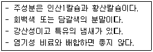
- 용성인비
- 질산칼슘
- 토머스인비
- 과린산석회
(정답률: 79%)
79. 수목 지상부 외과수술의 순서가 맞는 것은?
- 고사지 절단 - 부패부 제거 - 살균처리 - 살충처리 - 방부처리 - 방수처리
- 살균처리 - 살충처리 - 방부처리 - 방수처리 - 고사지 절단 - 부패부 제거
- 부패부 제거 - 살균처리 - 살충처리 - 고사지 절단 - 방부처리 - 방수처리
- 살균처리 - 살충처리 - 고사지 절단 - 부패부 제거 - 방부처리 - 방수처리
(정답률: 66%)
80. 다음 중 발병초기에 주로 외과적인 처치에 의해 병환부를 도려내고 약제 처리를 통해 방제할 수 있는 병으로 가장 적합한 것은?
- 부란병
- 탄저병
- 흰가루병
- 갈색무늬병
(정답률: 54%)